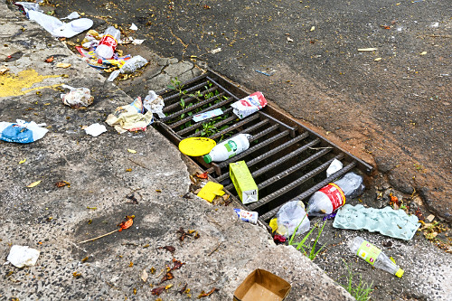

O que o lixo no lugar errado causa
Jogar um resíduo na rua parece pouco. Somado ao de milhares de pessoas, vira um problema de saúde, de dinheiro público e de meio ambiente.
Enchentes e bueiros entupidos
Plásticos, sacolas, entulho e móveis quebrados são levados pela chuva até as bocas de lobo. Com o bueiro entupido, a água não escoa e a rua alaga. A prefeitura gasta com limpeza e desobstrução, dinheiro que poderia ir para outros serviços.

Dengue, ratos e escorpiões
Pneus, garrafas e latas em terrenos baldios juntam água da chuva, e é nessa água parada que o mosquito Aedes aegypti se reproduz. Pilhas de entulho também servem de abrigo para ratos, baratas e escorpiões, que acabam chegando às casas vizinhas (Fonte 4).

Contaminação do solo e da água
Pilhas e baterias contêm metais pesados, como chumbo, cádmio e mercúrio. Com a chuva, essas substâncias infiltram no solo e podem chegar a rios e lençóis de água.
Lixo eletrônico
O mundo gerou cerca de 62 milhões de toneladas de lixo eletrônico em 2022, e apenas uma pequena parte foi coletada e reciclada de forma documentada (Fonte 2). Celulares, carregadores e computadores têm metais valiosos, como cobre e ouro, e também substâncias tóxicas.

Remédios vencidos e lâmpadas
💊 Remédios
Jogados no lixo ou no vaso, os princípios ativos chegam à água e ao solo, e o tratamento comum de esgoto nem sempre os remove. Também há risco de intoxicação de crianças e animais (Fonte 5).
💡 Lâmpadas
As fluorescentes compactas e tubulares contêm mercúrio. Se quebram no lixo comum, liberam vapor tóxico e contaminam o solo. Leve inteiras ao ponto de coleta.
Reciclagem também é renda
Papel, plástico, vidro e metal voltam à indústria quando separados corretamente. Cada material que vai para o lixo comum é renda perdida para catadores e cooperativas, além de energia e matéria-prima desperdiçadas (Fonte 3).

O que diz a lei
A Política Nacional de Resíduos Sólidos (Lei 12.305/2010) define a responsabilidade compartilhada entre governo, empresas e cidadãos, e prevê a logística reversa para pilhas, baterias, eletrônicos, lâmpadas, óleos e medicamentos: quem vende deve receber o produto de volta (Fonte 1). Descarte irregular também pode render multa.
Fontes
- Brasil. Lei nº 12.305/2010 (Política Nacional de Resíduos Sólidos). planalto.gov.br
- Global E-waste Monitor 2024 (ITU/UNITAR). ewastemonitor.info
- ABRELPE. Panorama dos Resíduos Sólidos no Brasil. abrelpe.org.br
- Ministério da Saúde. Orientações sobre dengue e prevenção. gov.br/saude
- Anvisa. Descarte de medicamentos. gov.br/anvisa
Confira os números e links antes de publicar, pois podem ser atualizados pelas fontes.